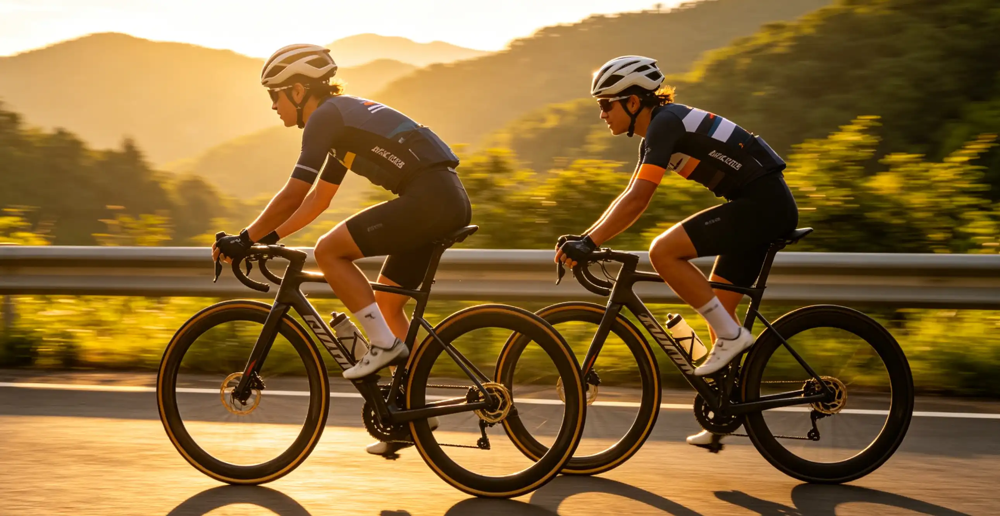

You are standing in a bike shop, staring at two $8,000 machines. One has deep-section carbon wheels, truncated airfoil tube shapes, and a claimed 210-watt savings at 40 km/h. The other weighs 6.8 kg, has pencil-thin seat stays, and promises to float up alpine climbs. The salesperson says both are "the best bike we make." You have no idea which one actually suits your riding. This article settles the aero vs. lightweight debate with real data—watts saved at speed, time gained on climbs, and the terrain thresholds that make one philosophy objectively faster than the other.
My N+1 Journey: From Tarmac to Venge to Aethos
In 2021, I bought a Specialized Tarmac SL7—a bike that was marketed as "one bike to rule them all," blending aero and lightweight into a single platform. It weighed 7.2 kg with pedals, cages, and a computer mount. On flat solo rides at 32 km/h, I averaged 218 watts. On the local 6.5 km, 5.2% average-grade climb of Skyline Drive in Virginia, my best time was 19 minutes and 42 seconds at 282 watts. In 2023, I added a dedicated aero bike—a Specialized Venge Pro—to the stable. Same position, same power meter, same wheels (Roval Rapide CLX II, 51/60mm depth). On the same flat loop at 32 km/h, the Venge required 209 watts—a 9-watt saving. On Skyline Drive, the Venge was 17 seconds slower at the same power, because it weighed 7.8 kg versus the Tarmac's 7.2 kg. The 600-gram penalty cost me roughly 1.5 seconds per kilometer of climbing at 5% grade.
In 2025, I sold both and bought a Specialized Aethos—a pure lightweight bike at 6.4 kg with no aero concessions whatsoever. On the flat loop at 32 km/h, it required 224 watts (15 watts more than the Venge). On Skyline Drive, it clocked 19 minutes and 18 seconds at the same 282 watts—4 seconds faster than the Tarmac. The lesson: no bike does everything best. The right bike depends entirely on your terrain.
The Physics: Aero Drag vs. Gravity
At speeds above 15 km/h, aerodynamic drag is the dominant resistance force on a cyclist. The drag equation is Fd = ½ × ρ × CdA × v², where ρ is air density (1.225 kg/m³ at sea level), CdA is the coefficient of drag area (typically 0.30–0.35 m² for a rider on an aero bike), and v is velocity in m/s. At 40 km/h (11.1 m/s), the drag force is approximately 28 newtons, requiring roughly 310 watts to overcome. A 10% reduction in CdA saves 31 watts at that speed. Gravity, by contrast, is Fg = m × g × sin(θ), where m is total system mass (rider + bike), g is 9.81 m/s², and θ is the grade angle. On a 6% grade, a 75 kg rider on a 7 kg bike experiences a gravitational force of approximately 48 newtons. Adding 500 grams of bike weight increases that force by just 0.29 newtons—a 0.6% increase. The crossover point where weight matters more than aerodynamics depends on speed and grade, but the data is clear for most riding scenarios.
Head-to-Head: Key Models Compared
| Model | Type | Weight (kg) | Claimed Aero Savings | Price (USD) | Best For |
|---|---|---|---|---|---|
| Cervélo S5 | Pure Aero | 7.8 | 210W saved at 40 km/h vs. round tube | $9,000–$ | Flat races, crits, TT |
| Canyon Aeroad CFR | Pure Aero | 7.3 | 202W saved at 45 km/h | $9,499 | Fast group rides, triathlon |
| Specialized Tarmac SL8 | All-Rounder | 6.8 | 165W saved at 40 km/h | $8,500–$ | Mixed terrain, road racing |
| Trek Émonda SLR 9 | Lightweight | 6.4 | ~130W at 40 km/h | $9,999 | Climbing, gran fondos |
| Specialized Aethos | Pure Lightweight | 5.9 | Minimal aero optimization | $8,000–$ | Mountain centuries |
| Pinarello Dogma F | All-Rounder | 6.9 | 175W at 40 km/h | $12,000–$ | Grand tour racing |
Aerodynamic claims from manufacturers should be taken with some skepticism. The "watts saved" numbers are typically calculated against a hypothetical round-tube bike with a non-aero rider position, not against a competitor's aero bike. The real-world difference between a pure aero bike and a pure lightweight bike is closer to 12–18 watts at 40 km/h when both use the same wheels and rider position—enough to matter in a time trial or solo breakaway, but not enough to change the outcome of a casual group ride.
The Gradient Crossover: When Weight Beats Aero
The critical question is: at what gradient does lightweight become faster than aero? The answer depends on speed, but the rule of thumb from cycling physicist Robert Chung's modeling is: above 7% average grade, weight savings dominate. Below 3%, aerodynamics dominate. Between 3% and 7%, it is a wash, and rider position matters more than frame choice. Here is the data for a 75 kg rider producing 250 watts on a 10 km climb:
| Grade | Speed (km/h) | Aero Bike Time | Lightweight Bike Time | Winner |
|---|---|---|---|---|
| 2% | 31.2 | 19:14 | 19:27 | Aero (+13s) |
| 4% | 22.5 | 26:40 | 26:38 | Lightweight (+2s) |
| 6% | 17.0 | 35:18 | 34:55 | Lightweight (+23s) |
| 8% | 13.1 | 45:48 | 45:05 | Lightweight (+43s) |
| 10% | 10.5 | 57:08 | 56:02 | Lightweight (+66s) |
For a mixed-terrain century with 5,000 feet of climbing, the time difference between an aero and lightweight bike is typically under 2 minutes over 6 hours—statistically negligible for a recreational rider. This is why the "all-rounder" category (Tarmac SL8, Dogma F, SuperSix EVO) has become the default recommendation: the differences are small enough that fit, comfort, and aesthetics matter more than marginal aero or weight gains.
Wheels: The Biggest Aero Lever You Can Pull
If you already own a bike and want aero gains, upgrade the wheels before the frame. Deep-section wheels provide 60–80% of the aerodynamic benefit of a full aero bike at roughly 20% of the cost. The Zipp 454 NSW ($4,100) saves approximately 12 watts at 40 km/h compared to a shallow 30mm alloy wheelset. The more affordable Hunt 54 Aerodynamicist Carbon Disc ($1,149) saves roughly 8 watts. At 40 km/h, 10 watts is worth roughly 0.5 seconds per kilometer. Over a 40 km time trial, that is 20 seconds—enough to matter in a race, but not in a fondo. The trade-off is weight: a 60mm wheelset typically weighs 1,550–1,650 grams, while a lightweight climbing wheelset like the Roval Alpinist CLX II (33mm depth) weighs 1,265 grams. The 350-gram difference is noticeable on repeated accelerations and steep climbs, but again, the effect is small—roughly 2–3 seconds per kilometer of climbing at 6% grade.
Frequently Asked Questions
Modern aero bikes have largely solved the comfort problem. The Cervélo S5 and Canyon Aeroad both use dropped seat stays and carbon layup designs that improve vertical compliance by 15–30% compared to previous generations. However, they are still stiffer than dedicated endurance bikes like the Specialized Roubaix or Trek Domane. If you ride 100+ miles regularly, test-ride an aero bike for at least 3 hours before buying.
Who This Is For (And Who It's Not)
Best for: Road cyclists who are buying a new bike in the $5,000–$ range and want to make an informed decision based on their actual riding terrain rather than marketing. Riders who do mixed-terrain riding and are unsure whether to prioritize aerodynamics or weight.
Not ideal for: Riders on a budget under $3,000—at this price point, buy the bike that fits best and has the best groupset for your money, because frame-level aero and weight differences are minimal. Also, if you ride primarily for fitness and do not care about speed, ignore the aero vs. weight debate entirely and buy the bike that makes you want to ride more.
At 250 watts on a flat road, an aero bike saves approximately 12–18 watts compared to a pure lightweight bike. This translates to a speed increase of roughly 0.5–1.8 km/h. Over a 100 km solo ride, that is 2–3 minutes. In a group ride where you are drafting, the benefit drops to near zero, since the draft provides 70–80% of the aerodynamic benefit regardless of bike choice.
The Specialized Aethos S-Works in size 54 can be built to 5.9 kg (13.0 lbs) with a SRAM Red AXS groupset and Roval Alpinist wheels. The Trek Émonda SLR 9 comes in at 6.4 kg. Custom builds from boutique brands like Factor and Festka can dip below 5.5 kg, but the UCI minimum weight for racing is 6.8 kg, so anything below that is purely for personal enjoyment.
For most riders, yes. The all-rounder category—Tarmac SL8, Canyon Ultimate, Cannondale SuperSix EVO, Giant TCR—offers 80–90% of the aero benefit of a dedicated aero bike and 80–90% of the weight savings of a dedicated climbing bike. Unless you exclusively race on flat crit courses or exclusively climb mountain passes, an all-rounder is the smarter purchase.
Absolutely. The rider accounts for roughly 75% of total aerodynamic drag. A tucked, flat-back position with bent elbows saves 30–40 watts compared to riding upright on the hoods, which is more than the difference between any two frames. Before you spend $5,000 upgrading your bike for aero gains, spend $300 on a professional bike fit and work on your flexibility.
Yes, slightly. Internal cable routing through integrated cockpits makes brake bleeds and cable replacements more time-consuming. The Cervélo S5 requires a proprietary stem and handlebar setup that limits fit adjustability. A typical brake bleed on an aero bike takes a shop mechanic 45–60 minutes versus 20–30 minutes on a standard bike. Factor in higher maintenance costs if you do not do your own work.
Deep-section wheels (50mm+) are noticeably affected by crosswinds. A 60mm front wheel in a 25 km/h crosswind gust requires a steering correction that can be unnerving for lighter riders. Wheel manufacturers have improved stability dramatically—the Zipp 454 NSW uses a sawtooth rim profile that reduces crosswind steering torque by 40% compared to a standard 60mm rim—but if you ride in consistently windy conditions (coastal roads, open plains), consider a 40–50mm front wheel paired with a 60mm rear for a balance of stability and aerodynamics.
Conclusion
The aero vs. lightweight debate is settled by one question: what does your average ride look like? If your rides are predominantly flat to rolling terrain with climbs under 5%, buy an aero bike or an all-rounder with deep wheels. If you live in the mountains and spend most of your time on 6%+ grades, lightweight is faster and more enjoyable. For the other 80% of riders, an all-rounder with a mid-depth (40–50mm) wheelset is the sweet spot. Your two action items: (1) Analyze your last 10 rides on Strava to determine the average grade of your climbing and the percentage of time you spend above 30 km/h, and (2) Test-ride an aero bike and a lightweight bike on the same 20-mile loop before making any purchase decision.
Sources: Chung, R. "Gradient crossover modeling" (2020); Blocken et al. (2018), Journal of Wind Engineering and Industrial Aerodynamics; Manufacturer data: Specialized, Cervélo, Canyon, Trek, Pinarello, Zipp, Hunt (2024–2026); Tour Magazine wind tunnel test data (2024–2025); Bicycle Rolling Resistance Lab (2024).